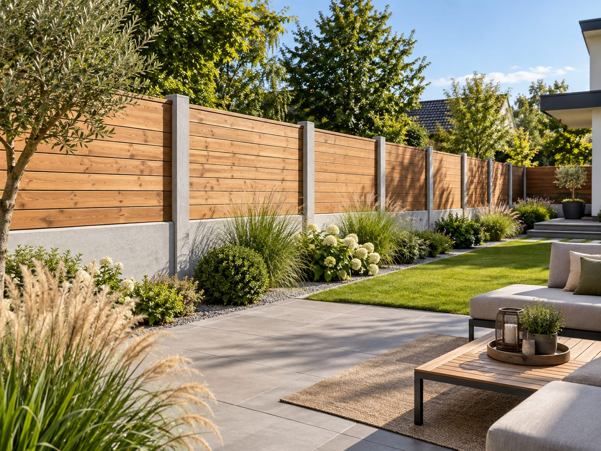
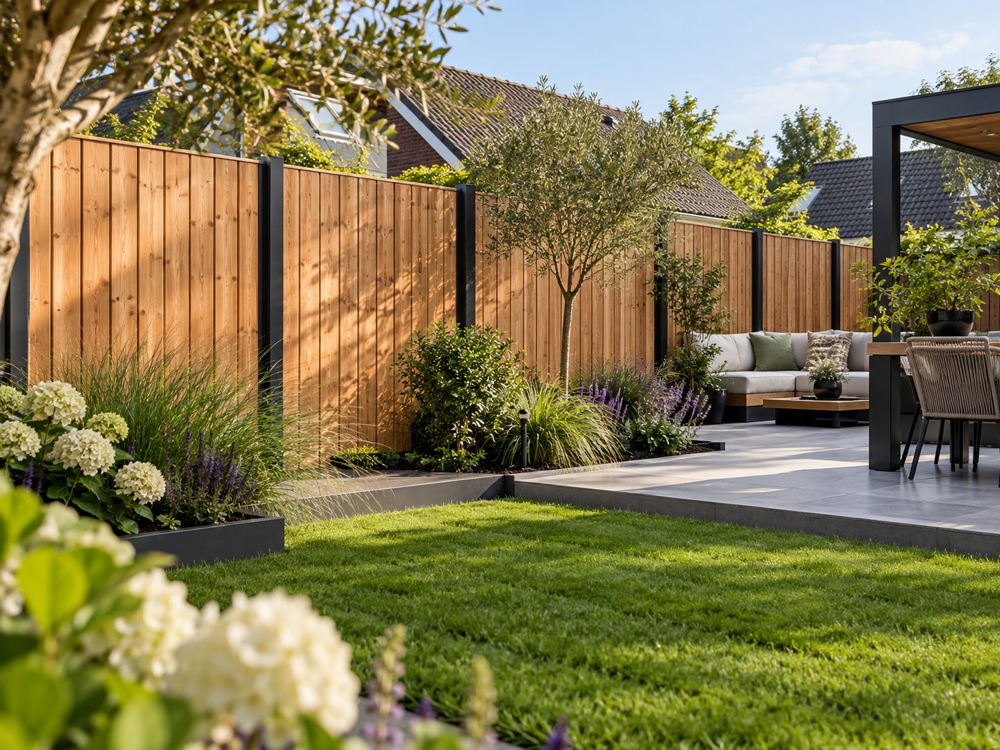
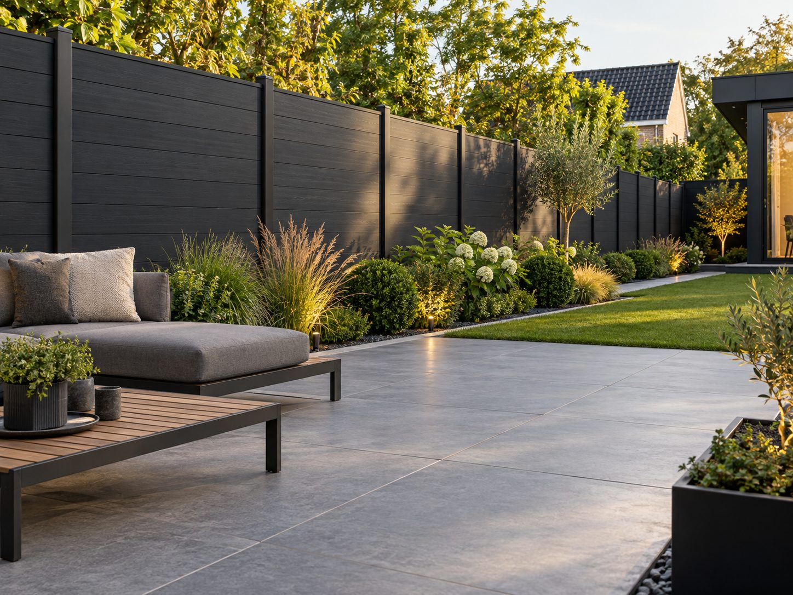
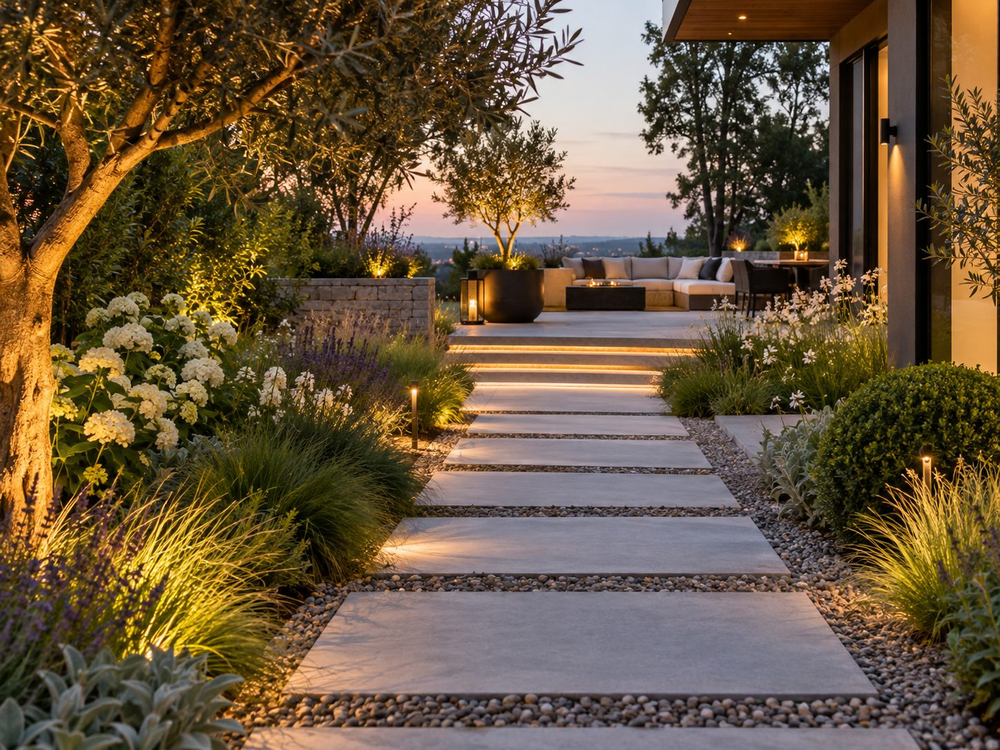

Malzemeler
Malzeme danışmanlığı
Bahçenize hangi malzeme uyar? Danışmanlık veriyor, ayrı veya montajla birlikte teslim ediyoruz.
Örnek görsel, tamamlanmış bir proje değildir
Ahşap
Çitler için çam ve Douglas çok kullanılır. Ahşap doğal bir görünüm verir ve düzenli bakım ister.
Beton üzerinde ahşap
Beton direkler arasında ahşap paneller ve beton taban plakası. Ahşap toprağa temas etmez.
Kompozit
Az bakım ister ve rengi solmaz. Az bakım istiyorsanız iyi bir seçimdir.
Karolar ve klinkerler
Bahçe yolları, teraslar ve araç yolları için beton, seramik veya pişmiş klinker. Zemin, en az taş kadar önemlidir.
Yapay çim
Çeşitli uygulamalarla bulunur. Kullanım ve bakım konusunda danışmanlık veririz.
Bitkiler ve toprak
Işığa, yere ve isteklerinize göre seçilen bitkiler, toprak ve bitki kasaları.
Örnek görsel, tamamlanmış bir proje değildir
İlham için
Bahçede malzemeler
Olası uygulamaların izlenim görselleri. Bunlar tamamlanmış proje ya da sabit ürün değildir; bahçenize hangi malzemenin uyduğunu sizinle birlikte konuşuruz.



Örnek görsel, tamamlanmış bir proje değildir
İlham için
Bahçede malzemeler
Olası uygulamaların izlenim görselleri. Bunlar tamamlanmış proje ya da sabit ürün değildir; bahçenize hangi malzemenin uyduğunu sizinle birlikte konuşuruz.
İlham için
Bahçede malzemeler
Olası uygulamaların izlenim görselleri. Bunlar tamamlanmış proje ya da sabit ürün değildir; bahçenize hangi malzemenin uyduğunu sizinle birlikte konuşuruz.
Ayrı veya montajla birlikte
İşiniz malzeme gerektiriyor mu? O zaman malzemeyi görüşerek kendiniz temin edebilir ya da Sealcleaning aracılığıyla teklife dahil ettirebilirsiniz; ayrı olarak veya montajla birlikte. Uygun malzemeler konusunda size memnuniyetle tavsiye veririz. Kendiniz bir çit tasarlamak mı istiyorsunuz? O zaman şunu deneyin: 3B tasarımcımız.
Malzeme danışmanlığı
Ne yaptırmak istediğinizi bize anlatın. Doğru malzeme konusunda danışmanlık veririz.
Teklif isteyin